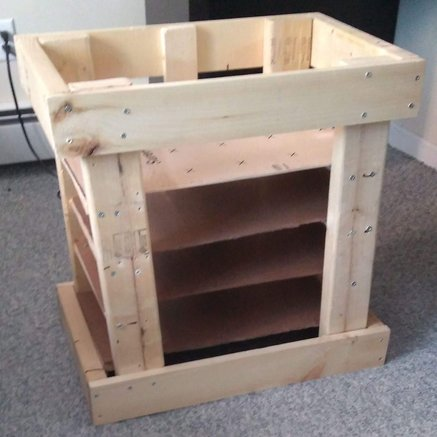

Creating a Workbench with Underneath Storage
This was one of my first woodworking projects. I wanted to create a strong table with shelf storage below to store papers or containers. I also wanted to make it just out of pieces of wood and hardware that I already had lying around in the house.
Blueprint
 To create the blueprint, I used Fusion 360 modeling software to generate the drawings and relevant dimensions. The best part about using CAD software is that gives me a sense of how the shelving will look when completed. It takes the guess-work out of engineering.
To create the blueprint, I used Fusion 360 modeling software to generate the drawings and relevant dimensions. The best part about using CAD software is that gives me a sense of how the shelving will look when completed. It takes the guess-work out of engineering.
 Using some scrap wood around the house, I cut a few 2*4s to length with a miter saw then screwed them in to create the frame. To add shelving, I used a table saw to form rectangles from a larger piece of plywood